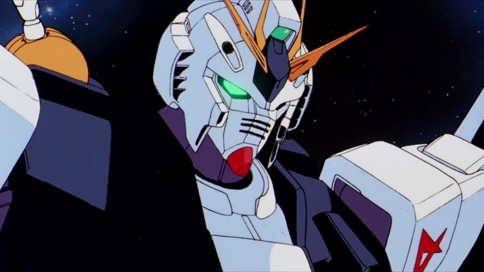

Gundam Universal Century Watch Order

The Universal Century timeline in the Mobile Suit Gundam franchise / The Universal Century is the main timeline in the Gundam franchise. There are multiple timelines in the franchise but the Universal Century is the main timeline that derives from the first show and has the most continuity.
The Universal Century spans across multiple shows and movies and this is the chronological order of watching them.
U.C. 0079
The year U.C. 0079 is the setting for the first Mobile Suit Gundam (1979) show. Amuro Ray pilots the RX-78-2 Gundam in the one year war against zeon. There are multiple other stories that take place in U.C. 0079 including Mobile Suit Gundam: The 08th MS Team, and Mobile Suit Gundam: Thunderbolt.
U.C. 0080-83
The years U.C. 0080-83 have multiple side stories that explain the events between Mobile Suit Gundam and Mobile Suit Zeta Gundam including Mobile Suit Gundam 0080: War in the Pocket and Mobile Suit Gundam 0083: Stardust Memory. These stories are not essential for the main timeline.
U.C. 0087-88
The year U.C. 0087 is the setting for the Mobile Suit Zeta Gundam (1985) show. Mobile Suit Zeta Gundam takes place 8 years after the first Mobile Suit Gundam show. Kamille Bidan pilots the MSZ-006 Zeta Gundam in the Battle of Gryps against the titans.
The year U.C. 0088 is the setting for the Mobile Suit Gundam ZZ (1986) show. Mobile Suit Gundam ZZ takes place immediately after the Mobile Suit Zeta Gundam show. Judau Ashta pilots the MSZ-010 ZZ Gundam in the neo zeon war.
U.C. 0093
The year U.C. 0093 is the setting for the Mobile Suit Gundam: Char’s Counterattack (1988) movie. Mobile Suit Gundam: Char’s Counterattack takes place 5 years after Mobile Suit Gundam ZZ. Amuro Ray pilots the RX-93 V Gundam in the second neo zeon war led by Char. The height of the Universal Century, a turning point in the timeline that will impact stories further down the timeline.
U.C. 0096-97
The year U.C. 0096 is the setting for the Mobile Suit Gundam Unicorn (2010) show. Mobile Suit Gundam Unicorn takes place 3 years after Mobile Suit Gundam: Char’s Counterattack. Banagher Links pilots the RX-0 Unicorn Gundam.
U.C +
- Mobile Suit Gundam: The Origin U.C. 0068,0071,0078
- Mobile Suit Gundam: Hathaway U.C. 0105
- Mobile Suit Gundam F91 U.C. 0123